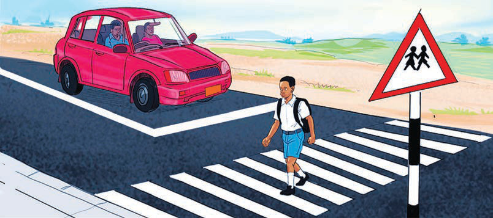

Kuna alama za barabarani ambazo zinazotoa ishara kwa watu wanaotembea kwa miguu kuvuka barabara (chunguza Kielelezo namba 3).

Kielelezo namba 3: Alama za barabarani kwa wanaovuka kwa miguu
Alama hizo ni alama ya pundamilia. Alama hii huchorwa katika barabara kwa rangi nyeupe. Ni vema kupita sehemu hiyo unapotaka kuvuka barabara. Pia, kuna taa za barabarani zinazoonesha ishara wakati wa kuvuka barabara. Alama hii ina alama ya mtu akitembea kwa haraka. Tunapoona alama hii tunapaswa kuvuka barabara kwa haraka endapo ni salama.
Pamoja na alama hizi, tunapaswa kuwa makini tunapovuka barabara. Toa ishara kwa mwendesha gari iwapo anakuja kwa mwendo wa kasi. Hakikisha unapovuka kuna taa nyekundu inayowaka kuashiria magari kusimama. Epuka kuvuka barabara wakati taa ya kijani inawaka kuruhusu magari kupita, hata kama kuna alama ya pundamilia. Tambua kuwa kuna madereva wa magari wazembe wasiozingatia alama hizi za barabarani.